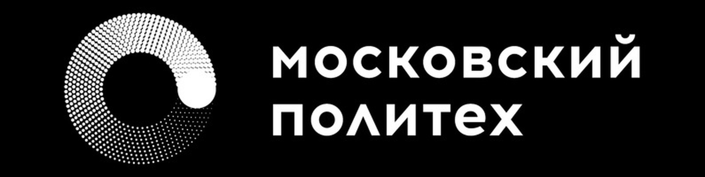

Я поступила в Московский Политех на факультет экономики и управления.
Мое направление: информационные технологии управления бизнесом.
К счастью, мне повезло и у меня очень клевая группа! Я нашла себе друзей
и даже создала команду на дисциплину "Управление инвистиционными проектами", в которой я являюсь лидером
Я надеюсь, что данный университет принесет мне много положительных эмоций и знаний! Я люблю Московский Политех
КТО МЫ КТО МЫ КТО МЫ - МОСКОВСКИЙ ПОЛИТЕХ!!!
Сайт Московского Политеха: Московский Политех
Факультеты Московского Политеха: Факультеты Московский Политех
Перечень факультетов: